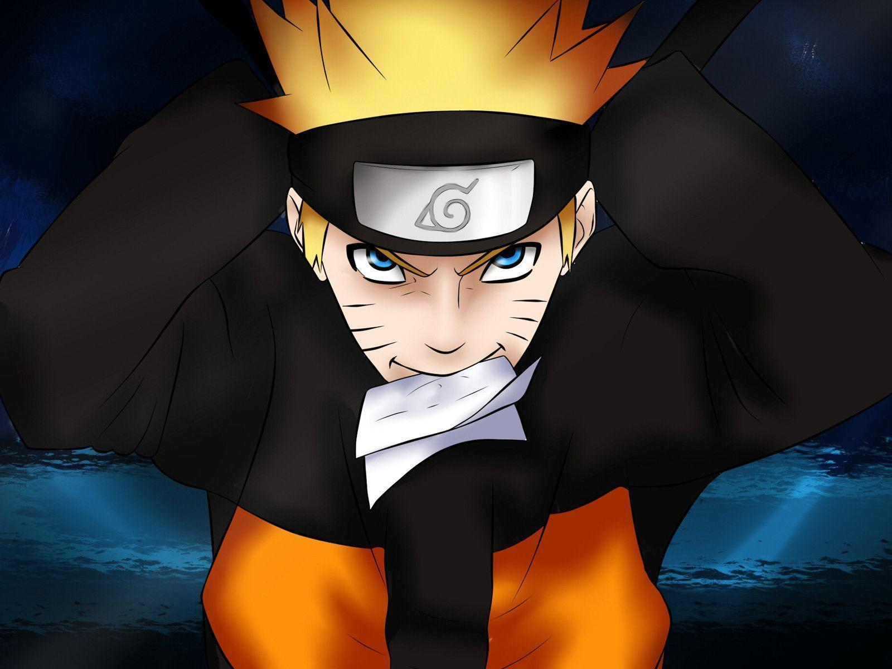
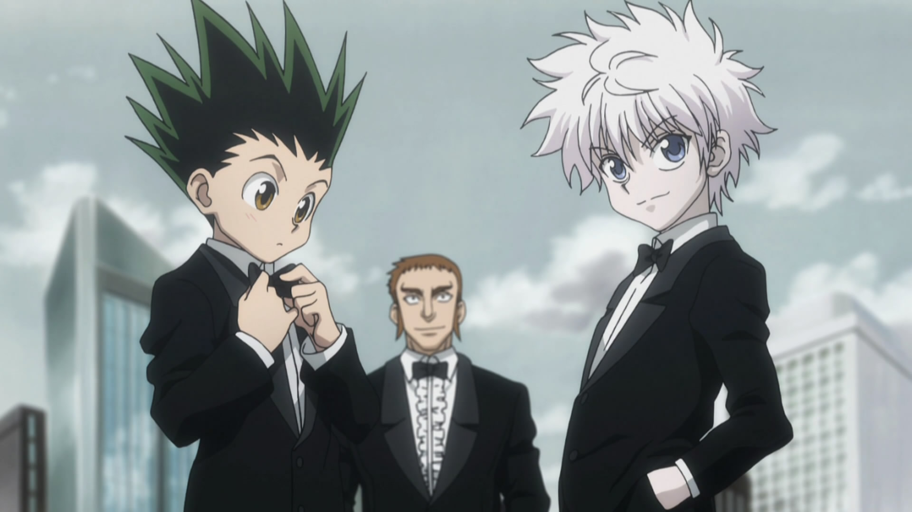

Naruto
"Naruto" stands as a pinnacle in the world of anime, earning its reputation as one of the finest series ever created. This epic saga revolves around Naruto Uzumaki, a young ninja with grand aspirations. Renowned for its dynamic and intense battles, the series weaves a captivating narrative that delves into themes of perseverance, personal growth, and the indomitable spirit of never surrendering. With its multifaceted characters and profound storytelling, "Naruto" indisputably ranks among the very best in the anime universe.
One Piece

"One Piece" stands as a testament to the heights that anime can achieve, earning its well-deserved reputation as one of the greatest series of all time. This remarkable adventure follows Monkey D. Luffy and his diverse crew of pirates as they search for the ultimate treasure, the One Piece. Renowned for its intricate world-building, multifaceted characters, and an epic storyline that seamlessly combines action, humor, and emotion, "One Piece" captivates audiences with its unparalleled storytelling. It has firmly established itself as a pinnacle in the world of anime, setting the standard for excellence in the medium.
Hunter x Hunter
"Hunter x Hunter" is widely regarded as one of the finest anime series ever created, earning its place among the best. This captivating tale follows Gon Freecss, a young boy who aspires to become a Hunter, an elite adventurer with extraordinary abilities. Known for its intricate and thought-provoking plot, complex characters, and thrilling battles, the series excels in both storytelling and character development. "Hunter x Hunter" sets a benchmark for excellence in the world of anime, providing a masterclass in crafting an engaging and unforgettable narrative.